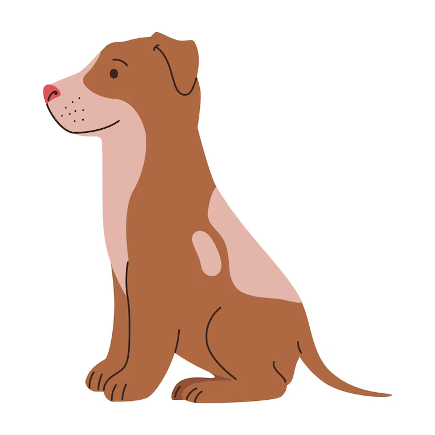
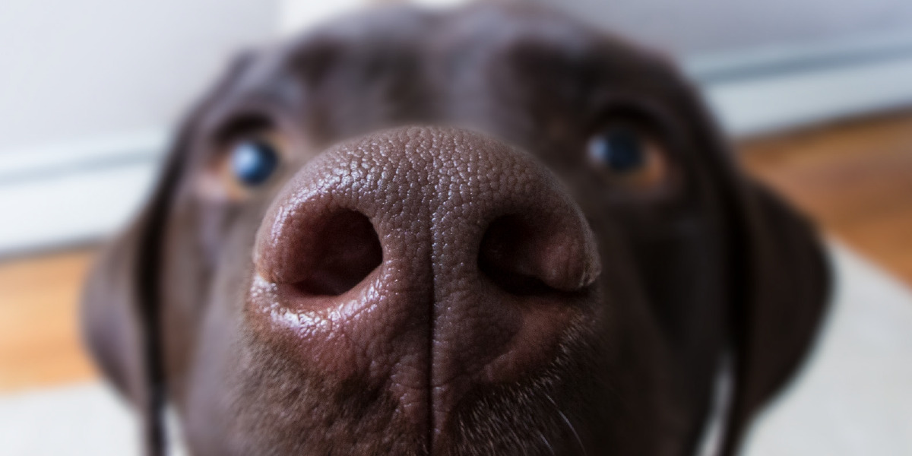

Exploramos cómo el extraordinario olfato de un perro entrenado podría ayudar a identificar señales tempranas asociadas al cáncer en Golden Retrievers.
Nuestra propuesta: entrenar a un segundo perro, especializado en detección olfativa, para investigar si reconoce patrones de olor asociados a ciertos cánceres en otro perro.
El diagnóstico tardío de cáncer en Golden Retrievers se asocia a la dificultad de identificar señales tempranas, sobre todo cuando aún no hay manifestaciones físicas evidentes. Algunos tipos de cáncer pueden evolucionar sin signos fácilmente reconocibles por los tutores.
Algunos cambios asociados a enfermedades pueden ser sutiles o inespecíficos.
Determinadas enfermedades pueden desarrollarse antes de que existan manifestaciones evidentes.
El tutor conoce a su perro, pero no puede identificar visualmente todos los procesos internos.
Detectar señales sospechosas y consultar al veterinario facilita una investigación diagnóstica temprana.
La raza es relevante por su predisposición a ciertas enfermedades oncológicas. Cerca del 60 % de los Golden Retrievers podría desarrollar cáncer durante su vida. Nos concentramos en perros de 7 a 9 años porque la adultez y el envejecimiento son etapas clave de vigilancia sanitaria,
ya que se detecta en edades tardías.
Los perros tienen un sistema olfativo capaz de discriminar olores de forma extraordinaria. Cuentan con entre 200 y 300 millones de receptores olfativos mientras que los humanos contamos con aproximadamente 6 millones.
La evidencia depende de la especie, el tipo de cáncer, la muestra y el diseño experimental. Se ha observado una tasa de 90% de sensibilidad y 98% de especificidad.

{{cmpText}}
Donde nuestros sentidos encuentran límites, el olfato canino abre camino.

Proponemos profundizar y analizar un sistema de detección olfativa canina orientado a identificar posibles señales asociadas a ciertos cánceres en Golden Retrievers, usando muestras biológicas obtenidas bajo protocolos veterinarios y de investigación.
{{e.d}}
No buscamos que un perro diagnostique a otro. Buscamos que su olfato pueda contribuir a reconocer señales que merecen estudiarse.
Los perros detectores aprenden mediante condicionamiento, discriminación olfativa y refuerzo positivo. El bienestar animal es prioridad: sesiones apropiadas, descanso y supervisión especializada. El adiestramiento no garantiza eficacia diagnóstica.
{{tabText}}
{{simMsg}}
{{conceptText}}
Recorrido ilustrativo de un Golden Retriever que participa en un programa de investigación con autorización de su tutor. Si los resultados fueran sólidos, reproducibles y clínicamente relevantes, podrían estudiarse aplicaciones complementarias.
La propuesta no reemplaza exámenes clínicos, estudios de imagen, citologías, biopsias ni otros procedimientos indicados por profesionales. Busca explorar una herramienta complementaria, capaz de motivar una consulta veterinaria para realizar los exámenes
Una señal olfativa es una hipótesis por investigar, no un diagnóstico de cáncer.
Cualquier perro con signos preocupantes debe recibir evaluación veterinaria sin esperar una prueba olfativa.
Creemos que la innovación también puede comenzar observando las capacidades extraordinarias de los animales. Nuestra propuesta explora una nueva posibilidad para investigar la detección temprana del cáncer en Golden Retrievers.
Tus preguntas, dudas y sugerencias nos ayudan a mejorar.
Aún no hay comentarios. ¡Sé el primero!
{{c.m}}